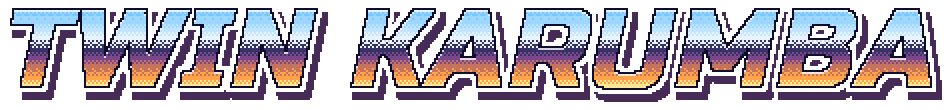
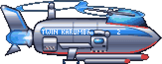
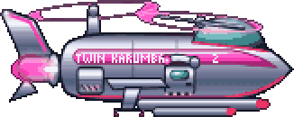
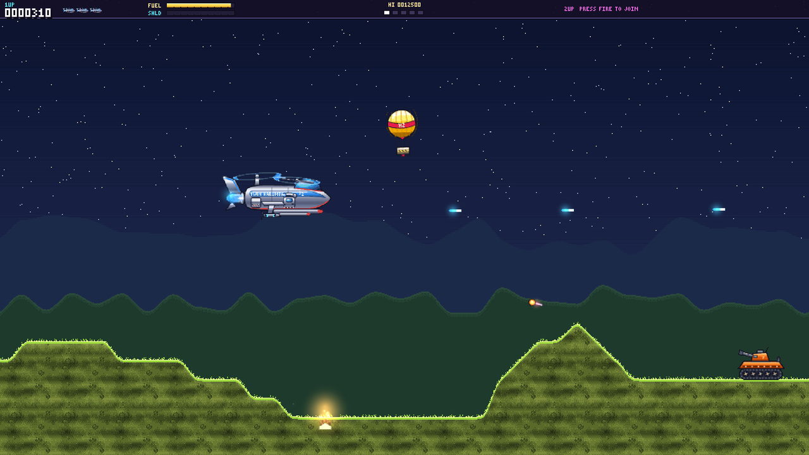
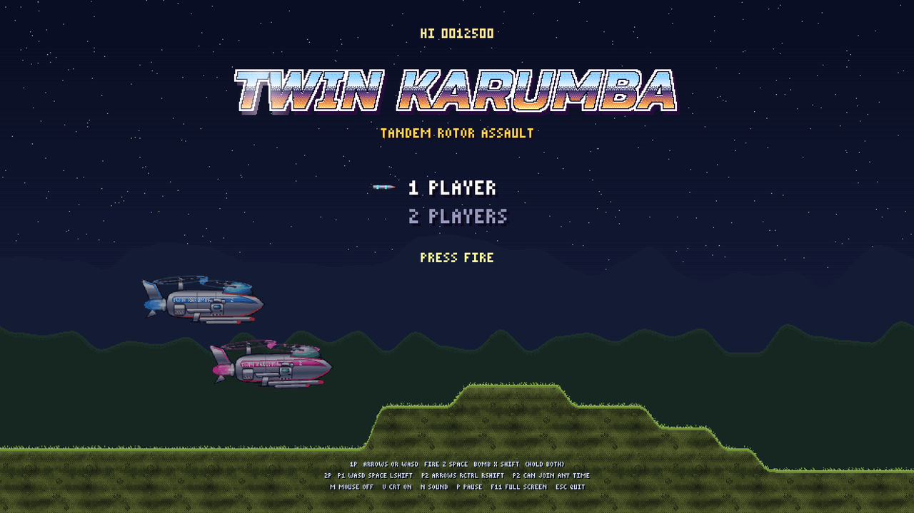
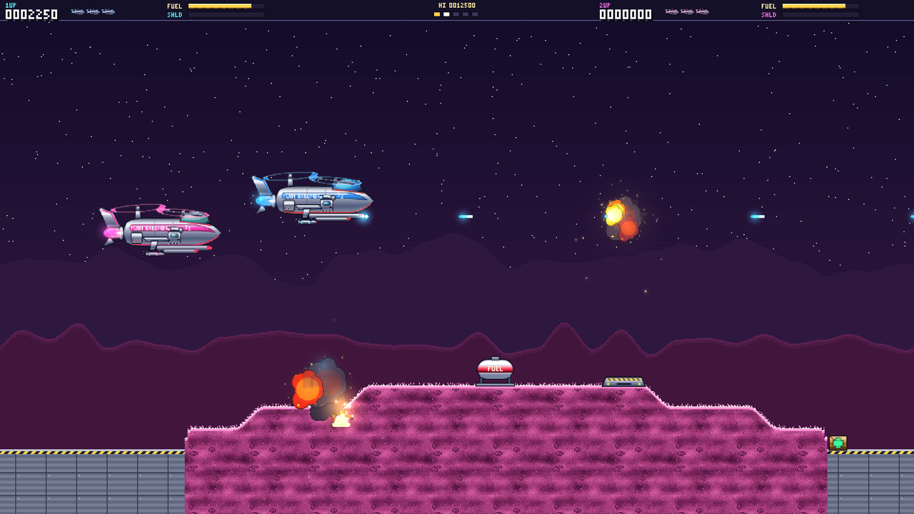
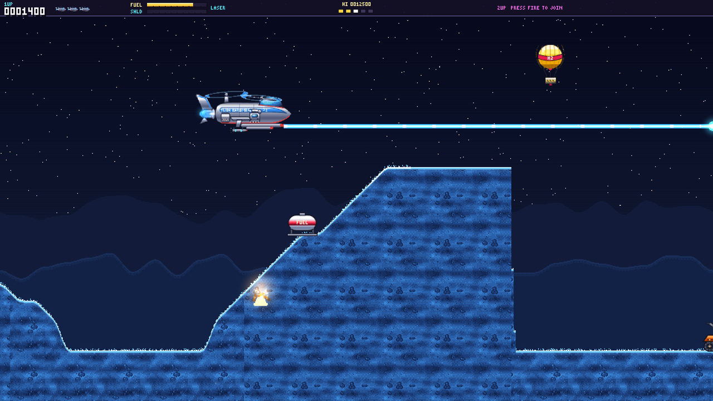
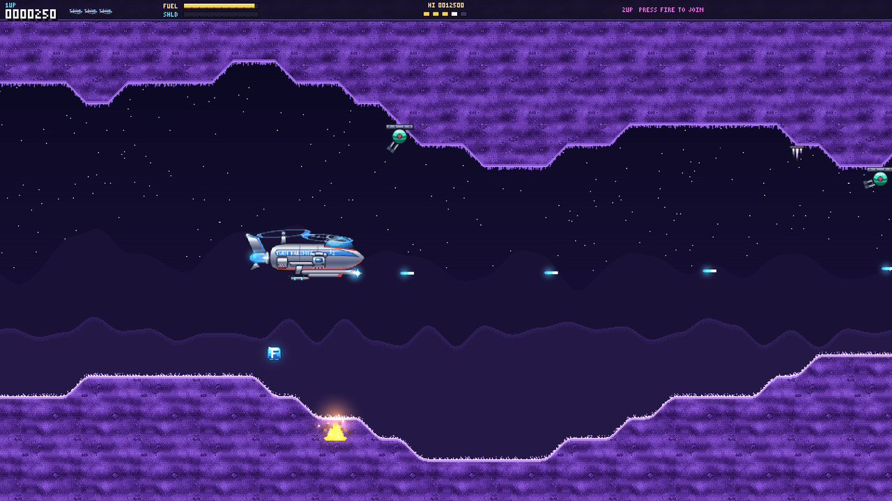
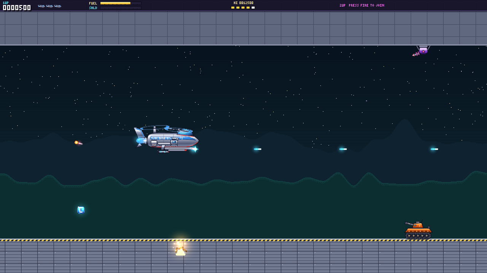

Fly low, fly together beta
An arcade side-scrolling shooter in the spirit of the classic chip-shop cabinets. Take the KX-2 tandem-rotor gunship through meadows, an airbase, a mountain pass and a cave to the Base Core, alone or with a friend.


Features
Guns, torpedoes and a laser
Fire forward along your tilt and drop torpedoes on ground targets. Tanks, trucks and turrets take two hits. Win the laser at a guarded site and it burns through anything.
Two players, one screen
Player 2 can drop in at any time. Each player has their own lives, fuel, shield and score, and only their own colour of pickups.
The crane
Hover low and lower the hoist to lift stranded pilots, fuel, shields and extra lives up through the cargo door.
Terrain that matters
Rolling meadows, a metal airbase, mountain cliffs and a winding cave, each with its own colours. Watch your fuel: the scroll never stops.
Adaptive chiptune music
Tracker music played live by the game. Each section brings its own part and lead (chip, accordion, twang guitar), and player 2 gets a flute that plays along while they're flying.
Pixel art and CRT
Detailed pixel art with glowing shots and layered explosions, full screen by default, with a CRT effect you can toggle with V.
One file, three systems
Each download is a single program with all the graphics, sound and levels built in, for Windows, macOS (Apple Silicon and Intel) and Linux.
Keyboard or mouse
Arrows or WASD to fly, Z/Space to fire, X/Shift to bomb, E for the crane. Press M to fly with the mouse.
Screenshots










Good to know
- The downloads are not signed yet. Windows may say "Windows protected your PC" (choose More info, then Run anyway). On macOS, open the app the first time with right-click, Open.
- The game opens full screen. F11 switches to a window, N turns the sound off, P pauses and Esc goes back to the title.
- Twin Karumba is beta software. You're welcome to play it and report bugs, but it isn't yet free to copy or change. See the licence.